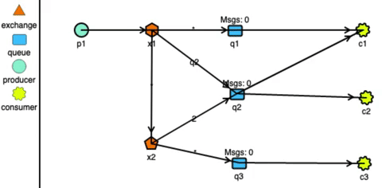

Kafka VS RabbitMQ

引言
无论您是要集成多个微服务、希望提高应用程序可靠性还是构建新的流应用，您都可能需要消息队列 (MQ) 或消息代理平台。这些类型的软件将消息从生产应用程序或服务传递到消费应用程序或服务。
两个最流行的消息处理平台是 Apache Kafka 和 RabbitMQ 。在高层次上，它们具有相似的功能，尽管它们之间存在重要差异。了解这些差异可以帮助您为特定用例选择一种或另一种。
在本博客中，我们将探讨 Kafka 和 RabbitMQ 的工作原理、它们的一些差异以及各自的最佳用例。
RabbitMQ
RabbitMQ 通常被概括为“开源分布式消息代理”。用 Erlang 编写，于 2007 年首次发布。它通常被认为是传统的消息队列。
开发人员通常选择 RabbitMQ 是因为它的灵活性。它有助于在复杂的路由场景中有效地传递消息。最初围绕流行的 AMQP 协议构建，还支持其它多种消息传递协议，包括 MQTT 和 STOMP 等，同时可以通过服务器上启用的插件扩展其功能。它可以通过部署在分布式环境中以扩展和提供高可用性。
架构
RabbitMQ 架构包括生产者、交换器、队列、绑定和消费者。生产者将消息推送到交换器，然后将消息路由到绑定的队列（或其他交换）。然后消费者继续从队列中读取消息，通常达到预定的消息限制。
参见 JMS vs AMQP 的 AMQP 介绍。
RabbitMQ 具有很强的路由能力。 它可以通过复杂的交换机和队列系统路由消息。生产者将消息发送到根据其配置进行操作的交换机。
下图是使用 http://tryrabbitmq.com 模拟的 RabbitMQ 路由：

Kafka
Apache Kafka 是一个开源分布式事件流平台。最初由 LinkedIn 开发用于跟踪网站活动，如今 Kafka 通常用于构建实时数据管道和流应用。它不是专注于灵活路由，而是提高原始吞吐量。用 Scala 和 Java 编写，Kafka 建立在 “distributed append-only log” 的思想之上，其中消息被写入到持久化到磁盘的日志的末尾，并且客户端可以选择从该日志开始读取的位置。同样，Kafka 集群可以跨多台服务器分布和集群，以获得更高程度的可用性。
架构
Kafka 架构包括生产者、消费者、集群、代理、主题和分区。生产者将记录发送到集群，集群存储这些记录，然后将它们传递给消费者，集群中的每个服务器节点都是一个“代理”，它存储生产者提供的数据，直到被消费者读取为止。
参见 Kafka 入门 介绍。
RabbitMQ vs Kafka
虽然它们不是同一个服务，但许多人经常将他们的消息队列选项缩小到这两个，想知道哪一个更好。这不是正确的问题，相反，您希望专注于每个服务的优势，分析它们的差异，然后决定这两个服务中哪一个最适合您的用例。即使在任一服务的功能之外，您还应该考虑操作服务所需的技能以及围绕它们的开发人员社区。
Confluent 也有一份 Kafka 和 RabbitMQ 以及 Pulsar 的比较，里面列举了很多方面，但客观性存在争议：Kafka vs. Pulsar vs. RabbitMQ: Performance, Architecture, and Features Compared。
要求和用例
在撰写最初的博文时，RabbitMQ 和 Kafka 之间在设计上存在非常明显的差异，因此，在用例上也存在差异。
RabbitMQ 的消息代理设计在具有特定路由需求和单消息保证的用例中表现出色，而 Kafka 的 append-only 日志允许开发人员访问流历史记录和更直接的流处理。虽然这两种技术可以实现的用例的维恩图非常紧凑，但在某些情况下，其中一种显然比另一种更好。
然而，在 RabbitMQ 新版本中，它引入一种新的数据结构：streams - 流，对 append-only 日志进行建模，具有非破坏性的消费语义。这种新的数据结构将与 Kafka 的持久日志非常相似，对于希望扩展其流处理用例的 RabbitMQ 用户来说，这将是一个令人兴奋的补充。此功能将与 AMQP 协议兼容，但它还将引入基于二进制的流协议。
开发者体验
这两项服务的开发人员体验基本保持不变，由于各自社区的工作，客户端和库的列表都在继续增长。RabbitMQ 和 Kafka 的客户端库列表都在稳步增长。随着越来越多的语言和框架越来越流行，为这两种服务找到一个支持良好且完整的库变得更加容易。
需要注意的一件事是 Kafka Streams 的增长，这是一个客户端库实现，使开发人员可以更轻松地处理流数据。它用于从 Kafka 读取数据、处理数据并将其写入另一个 Kafka 队列的常见用例。此外，对于希望构建流应用程序同时利用他们对关系数据库的熟悉的开发人员来说，ksqlDB 非常值得一试。
在一些其他部分的帮助下，RabbitMQ 可以完成类似的事情，例如 Spring Cloud Data Flow。此外，请注意上一节中提到的 RabbitMQ 的流式更改，这可以为开发人员打开与 RabbitMQ 交互的新方式。
性能
正如在最初的帖子中所指出的，性能可能很难量化，因为有这么多变量在起作用，包括服务的配置方式、您的代码与它的交互方式，当然还有它运行的硬件。从网络到内存和磁盘速度的一切都会极大地影响服务的性能。当然，RabbitMQ 和 Kafka 都针对性能进行了优化，但您还应该确保您的用例利用它们来最大限度地提高效率。
对于 RabbitMQ，有一些关于最大化性能的很好的操作方法资源，例如如何对集群进行基准测试和调整大小。这些指南详细介绍了有关如何配置集群以及您的代码应如何与它们交互以获得最佳性能的最佳实践。大部分建议都围绕诸如管理队列大小和连接以及注意客户端如何使用消息等问题。该 RabbitMQ 的集群指南还包括构建集群时需要注意的事项。
同样，Confluent 有一个很棒的在生产中运行 Kafka指南，它涵盖了许多相同的问题，当您构建将运行 Kafka 集群的硬件时，以及如何配置集群本身。由于 Kafka 在 JVM 之上运行，因此您需要记住几件事，该指南也包含了如何调整虚拟机。
如果您对原始数据感兴趣，RabbitMQ 团队和 Confluent 团队最近都发布了各自的基准。两者都包含有关如何配置集群以及放置在集群上的工作负载的大量详细信息，因此请确保在阅读结果时考虑这些信息。用例和操作也应在您的决策中发挥重要作用。
由 Confluent 团队发布的基准测试来看，Kafka 在吞吐量、和性能上还是有明显的优势。但是在延迟上 RabbitMQ 更胜一筹。
选择消息队列时的考虑
选择消息代理时，你需要考虑以下各种因素：
- 支持的编程语言：你选择的消息代理应该支持尽可能多的编程语言。
- 支持的消息标准：消息代理是否支持多种消息标淮，比如 AMQP 和 STOMP， 还是它仅支持专用的消息标准？
- 消息排序：消息代理是否能够保留消息的排序？
- 投递保证：消息代理提供什么样的消息投递保证？
- 持久性：消息是否持久化保存到磁盘并且能够在代理崩溃时恢复？
- 耐久性：如果接收方重新连接到消息代理，它是否会收到断开连接时发送的消息？
- 可扩展性：消息代理的可扩展性如何？
- 延迟：端到端是否有较大延迟？
- 竞争性（并发）接收方：消息代理是否支持竞争性接收方？
每个消息代理都有不同的侧重点。例如，一个非常低延迟的代理可能不会保留消息的顺序，不保证消息投递成功，只在内存中存储消息。保证投递成功并在磁盘上可靠地存储消息的代理可能具有更高的延迟。哪种消息代理最适合取决于你的应用程序的需求。你的应用程序的不同部分甚至可能具有不同的消息传递需求。
但是，消息顺序和可扩展性很可能是必不可少的。